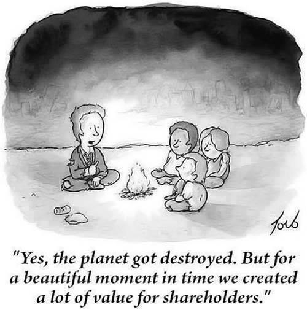

Cost-Benefit Analysis II
Lecture
Recap from Monday
Here’s a brief recap, with a few additional points.
- Defining “goodness” of different outcomes
- We need a utility / objective / loss function to compare different outcomes: \(u(a, \mathbf{s}): \mathcal{A} \times \mathcal{S} \to \mathbb{R}\) where \(\mathcal{A}\) is the set of actions and \(\mathcal{S}\) is the set of states of the world.
- Mathematically and practically, we can define “goodness” however we want! We are free to choose our metric of goodness to compare different decisions.
- Utility: “rational” people make decisions as though maximizing some internal, invisible utility function. This leads to useful insights from the field of economics.
- Key insight: decreasing marginal utility. When you have a lot of most things, getting a little bit more is not as valuable as when you have very little of it. For example, $1,000 is worth a lot more to a poor person than to a rich person. 100 gallons of water are more valuable to someone who walks 5 miles a day carrying water than to someone who has a tap in their kitchen.
- We should be skeptical of utility as a framework for predicting human behavior, but that’s not necessarily our goal.
- Social welfare: even if you believe everyone has a utility function, it turns out that there’s not a a single “right” way to combine many peoples’ utility functions into a single number describing social welfare.
- Cash flow: often, we put things into dollar terms. This is not because we think money is the most important thing. Instead, we can look at opportunity costs to try to put dollar values on things that are hard to value. For example, if we can protect one square mile of pristine wetland for $1 million, then arguably we shouldn’t spend more than that to protect another square mile of wetland. (But are they really substitutes?)
- Discounted cash flow: a dollar today is worth more than a dollar tomorrow. To compute the net present value (NPV) of a future cost or benefit, we discount it to the present using a discount rate \(\gamma\). If we define \(\gamma = 2\%\) then a dollar in 10 years is worth \((1 - \gamma)^{10} = \$0.82\) today.
- Cost-benefit analysis under uncertainty
- Many analyses in the real world choose a single “best guess” or “representative” state of the world (often referred to as scenario or similar). For example, for analyzing the costs and benefits of expanding a water resource system, a hypothetical water utility in Houston might use:
- projections of future population / demand from a regional water plan
- a single projected climate scenario
- a single assumed set of regulations on water quality
- current prices of building / operating water infrastructure
- However, many decisions that perform well under one scenario perform poorly under another. For example, a water utility might choose to build a new reservoir to meet future demand, but if the future is drier than expected, the reservoir might not fill up. Or, if the future is wetter than expected, the reservoir might fill up too much and flood people’s homes. (This will be a theme of the course!)
- A better approach is to allow uncertainty by computing expected utility / objective / loss / metrics. This is a weighted average of the utility under different states of the world, where the weights are the probabilities of those states of the world.
- \(\mathbb{E}_\mathbf{s} \left[ u(a, \mathbf{s}) \right] = \int p(\mathbf{s}) u(a, \mathbf{s}) d\mathbf{s}\) where \(p(\mathbf{s})\) is the probability density of SOW \(\mathbf{s}\).
- This requires defining a probability distribution over states of the world.
- Many analyses in the real world choose a single “best guess” or “representative” state of the world (often referred to as scenario or similar). For example, for analyzing the costs and benefits of expanding a water resource system, a hypothetical water utility in Houston might use:
Problems with discounting
There are lots of critiques of cost-benefit analysis, both as commonly practiced and in theory. We’ll address many of them over the course of the semester! Today, we’ll focus on discounting. Arrow et al. (2013) is an excellent review!
- “The rate at which future benefits and costs are discounted relative to current values often determines whether a project passes the benefit-cost test. This is especially true of projects with long time horizons, such as those to reduce greenhouse gas emissions.”
- Two rationales for discounting future benefits:
- Consumption rate of discount: “we place a lower value on the consumption of future generations, because we assume that future generations will be wealthier than we are and that the utility people receive from an extra dollar of consumption declines as their level of consumption increases.” (3% often used.)
- Investment approach: long as the rate of return to investment is positive, we need to invest less than a dollar today to obtain a dollar of benefits in the future. (7% often used).
- These are very imperfect assumptions!
Weitzman (2007):
- The discount rate we choose is all important
- We are a lot less sure about core elements of discounting for climate change than we commonly acknowledge because critical puzzles, projections, and ambiguities are yet unresolved
- Future growth rates are uncertain – for example, in a world with catastrophic climate change, future generations are unlikely to be richer!
A simple way to understand these problems is that if you use a large discount rate, your model will always tell you that you to do things like burning more fossil fuels whose consequences are rather distant. However, the consequences of doing this at scale violate the key justificatinos for discounting future benefits!

Proposed solutions
- Use a very low discount rate
- This places more weight on outcomes far in the future
- However, this can also lead to irrational conclusions. For example,
- Uncertain discount rate
- “Using an investment- or a consumption-based approach will require human judgment about the appropriate models to use to capture uncertainty about future discount rates” (Arrow et al., 2013)
- This is equivalent to declining discount rate – as you go farther out, your NPV is dominated by the lower discount rates.
- You still need to
Cost-benefit analysis in the wild
- EPA Guidance considers negative impacts of regulation on the economy, but also the positive impacts of cleaner air on human health and the environment.
- TWDB slideshow on cost-benefit analysis for flood planning in Texas.
- USACE cost-benefit guide
- Blog post arguing for World Bank to use a zero discount rate
- White House Circular A-94 dated November 9, 2023, provides an excellent summary of how the federal government is trying to improve cost-benefit analysis as a tool for decision-making.
Key points
- We need a way to compare different decisions. If we’re going to use a single number, we need to think hard about what that is!
- NPV cost-benefit analysis is the most commonly used approach. You should recognize it and know its (many) limitations!
Every analysis makes subjective choices about how to define and model the problem. That’s OK! However, reasonable people will often disagree. Making assumptions and framings transparent, and understanding their grounding and limitations, is thus critical. This will be a recurring theme of the class!
- Cost-benefit analysis should be viewed as a way to explore how different assumptions lead to different conclusions, not a top-down way to make decisions. More on this next week.